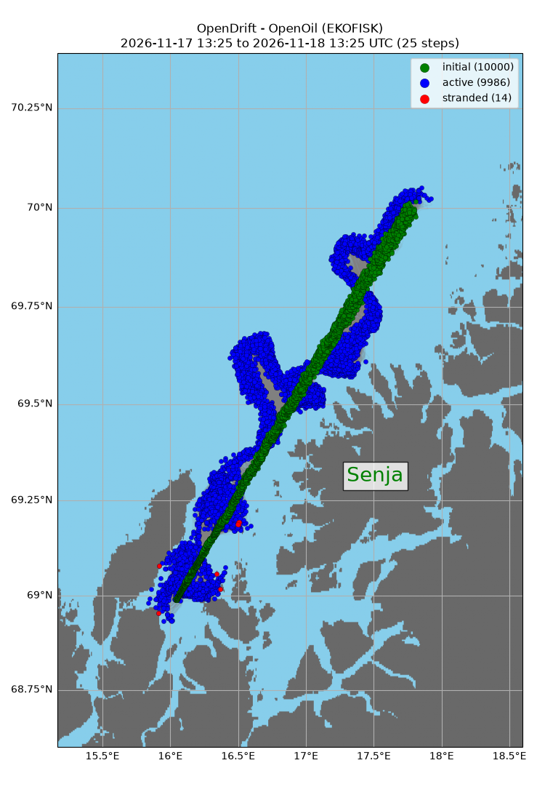

Note
Go to the end to download the full example code.
Cone seeding
16:07:27 INFO opendrift:579: OpenDriftSimulation initialised (version 1.14.11 / v1.14.12-75-gf9e7122)
Using live data from Thredds
o.add_readers_from_list([
'https://thredds.met.no/thredds/dodsC/fou-hi/norkystv3_800m_m00_be'])
Adjusting some configuration
o.set_config('processes:dispersion', True)
o.set_config('processes:evaporation', False)
o.set_config('processes:emulsification', True)
Seed elements along cone, e.g. ship track with increasing uncertainty in position
latstart = 68.988911
lonstart = 16.040701
latend = 69.991446
lonend = 17.760061
time = [datetime.utcnow(), datetime.utcnow() + timedelta(hours=12)]
o.seed_cone(lon=[lonstart, lonend], lat=[latstart, latend],
oil_type='EKOFISK', radius=[100, 800], number=10000, time=[time])
print(o)
/root/project/examples/example_cone.py:31: DeprecationWarning: datetime.datetime.utcnow() is deprecated and scheduled for removal in a future version. Use timezone-aware objects to represent datetimes in UTC: datetime.datetime.now(datetime.UTC).
time = [datetime.utcnow(), datetime.utcnow() + timedelta(hours=12)]
16:07:27 INFO opendrift.models.basemodel.environment:203: Adding a global landmask from GSHHG
16:07:34 INFO opendrift.models.basemodel.environment:227: Fallback values will be used for the following variables which have no readers:
16:07:34 INFO opendrift.models.basemodel.environment:230: sea_surface_height: 0.000000
16:07:34 INFO opendrift.models.basemodel.environment:230: upward_sea_water_velocity: 0.000000
16:07:34 INFO opendrift.models.basemodel.environment:230: sea_surface_wave_significant_height: 0.000000
16:07:34 INFO opendrift.models.basemodel.environment:230: sea_surface_wave_stokes_drift_x_velocity: 0.000000
16:07:34 INFO opendrift.models.basemodel.environment:230: sea_surface_wave_stokes_drift_y_velocity: 0.000000
16:07:34 INFO opendrift.models.basemodel.environment:230: sea_surface_wave_period_at_variance_spectral_density_maximum: 0.000000
16:07:34 INFO opendrift.models.basemodel.environment:230: sea_surface_wave_mean_period_from_variance_spectral_density_second_frequency_moment: 0.000000
16:07:34 INFO opendrift.models.basemodel.environment:230: sea_ice_area_fraction: 0.000000
16:07:34 INFO opendrift.models.basemodel.environment:230: sea_ice_x_velocity: 0.000000
16:07:34 INFO opendrift.models.basemodel.environment:230: sea_ice_y_velocity: 0.000000
16:07:34 INFO opendrift.models.basemodel.environment:230: sea_water_temperature: 10.000000
16:07:34 INFO opendrift.models.basemodel.environment:230: sea_water_salinity: 34.000000
16:07:34 INFO opendrift.models.basemodel.environment:230: sea_floor_depth_below_sea_level: 10000.000000
16:07:34 INFO opendrift.models.basemodel.environment:230: horizontal_diffusivity: 0.000000
16:07:34 INFO opendrift.models.basemodel.environment:230: ocean_vertical_diffusivity: 0.020000
16:07:34 INFO opendrift.models.basemodel.environment:230: ocean_mixed_layer_thickness: 50.000000
16:07:34 INFO opendrift.models.openoil.adios.dirjs:86: Querying ADIOS database for oil: EKOFISK
16:07:34 WARNING opendrift.models.openoil.adios.dirjs:90: Several oils found with name: EKOFISK: ['AD00328', 'AD00329', 'AD00332', 'AD00333', 'AD01944', 'AD02094', 'AD02463', 'AD02558', 'NO00013', 'NO00014', 'NO00015', 'NO00016'], using first.
16:07:34 INFO opendrift.models.openoil.openoil:1731: Using density 809.002835 and viscosity 3.3498550728972226e-06 of oiltype EKOFISK
===========================
Model: OpenOil (OpenDrift version 1.14.11)
0 active Oil particles (0 deactivated, 10000 scheduled)
-------------------
Environment variables:
-----
land_binary_mask
1) global_landmask
-----
Readers not added for the following variables:
horizontal_diffusivity
ocean_mixed_layer_thickness
ocean_vertical_diffusivity
sea_floor_depth_below_sea_level
sea_ice_area_fraction
sea_ice_x_velocity
sea_ice_y_velocity
sea_surface_height
sea_surface_wave_mean_period_from_variance_spectral_density_second_frequency_moment
sea_surface_wave_period_at_variance_spectral_density_maximum
sea_surface_wave_significant_height
sea_surface_wave_stokes_drift_x_velocity
sea_surface_wave_stokes_drift_y_velocity
sea_water_salinity
sea_water_temperature
upward_sea_water_velocity
x_sea_water_velocity
x_wind
y_sea_water_velocity
y_wind
---
Lazy readers:
LazyReader: https://thredds.met.no/thredds/dodsC/fou-hi/norkystv3_800m_m00_be
Discarded readers:
===========================
Running model for 24 hours
o.run(steps=24*2, time_step=1800, time_step_output=3600)
16:07:34 INFO opendrift:1921: Skipping environment variable upward_sea_water_velocity because of condition ['drift:vertical_advection', 'is', False]
16:07:34 INFO opendrift:1932: Storing previous values of element property lon because of condition (('general:coastline_action', 'in', ['stranding', 'previous']), 'or', ('general:seafloor_action', 'in', ['previous']))
16:07:34 INFO opendrift:1932: Storing previous values of element property lat because of condition (('general:coastline_action', 'in', ['stranding', 'previous']), 'or', ('general:seafloor_action', 'in', ['previous']))
16:07:34 INFO opendrift:968: Using existing reader for land_binary_mask to move elements to ocean
16:07:34 INFO opendrift:1000: All points are in ocean
16:07:34 INFO opendrift.models.openoil.openoil:697: Oil-water surface tension is 0.027884 Nm
16:07:34 INFO opendrift.models.openoil.openoil:710: Max water fraction not available for EKOFISK, using default
16:07:34 INFO opendrift:2248: 2026-11-12 16:07:27.586480 - step 1 of 48 - 417 active elements (0 deactivated)
16:07:34 INFO opendrift.readers:67: Opening file with xr.open_dataset
16:07:38 INFO opendrift.readers.reader_netCDF_CF_generic:340: Detected dimensions: {'x': 'X', 'y': 'Y', 'z': 'depth', 'time': 'time'}
16:07:38 INFO opendrift.readers.basereader:175: Variable x_sea_water_velocity will be rotated from eastward_sea_water_velocity
16:07:38 INFO opendrift.readers.basereader:175: Variable y_sea_water_velocity will be rotated from northward_sea_water_velocity
16:07:38 INFO opendrift.readers.basereader:175: Variable x_wind will be rotated from eastward_wind
16:07:38 INFO opendrift.readers.basereader:175: Variable y_wind will be rotated from northward_wind
16:07:43 INFO opendrift:2248: 2026-11-12 16:37:27.586480 - step 2 of 48 - 834 active elements (0 deactivated)
16:07:43 INFO opendrift:2248: 2026-11-12 17:07:27.586480 - step 3 of 48 - 1250 active elements (0 deactivated)
16:07:48 WARNING opendrift.readers.basereader.structured:324: Data block from https://thredds.met.no/thredds/dodsC/fou-hi/norkystv3_800m_m00_be not large enough to cover element positions within timestep. Buffer size (8) must be increased. See `Variables.set_buffer_size`.
16:07:48 INFO opendrift:2248: 2026-11-12 17:37:27.586480 - step 4 of 48 - 1667 active elements (0 deactivated)
16:07:48 WARNING opendrift.readers.basereader.structured:324: Data block from https://thredds.met.no/thredds/dodsC/fou-hi/norkystv3_800m_m00_be not large enough to cover element positions within timestep. Buffer size (8) must be increased. See `Variables.set_buffer_size`.
16:07:48 INFO opendrift:2248: 2026-11-12 18:07:27.586480 - step 5 of 48 - 2084 active elements (0 deactivated)
16:07:51 WARNING opendrift.readers.basereader.structured:324: Data block from https://thredds.met.no/thredds/dodsC/fou-hi/norkystv3_800m_m00_be not large enough to cover element positions within timestep. Buffer size (8) must be increased. See `Variables.set_buffer_size`.
16:07:51 INFO opendrift:2248: 2026-11-12 18:37:27.586480 - step 6 of 48 - 2500 active elements (0 deactivated)
16:07:51 WARNING opendrift.readers.basereader.structured:324: Data block from https://thredds.met.no/thredds/dodsC/fou-hi/norkystv3_800m_m00_be not large enough to cover element positions within timestep. Buffer size (8) must be increased. See `Variables.set_buffer_size`.
16:07:51 INFO opendrift:2248: 2026-11-12 19:07:27.586480 - step 7 of 48 - 2917 active elements (0 deactivated)
16:07:54 WARNING opendrift.readers.basereader.structured:324: Data block from https://thredds.met.no/thredds/dodsC/fou-hi/norkystv3_800m_m00_be not large enough to cover element positions within timestep. Buffer size (8) must be increased. See `Variables.set_buffer_size`.
16:07:55 INFO opendrift:2248: 2026-11-12 19:37:27.586480 - step 8 of 48 - 3334 active elements (0 deactivated)
16:07:55 WARNING opendrift.readers.basereader.structured:324: Data block from https://thredds.met.no/thredds/dodsC/fou-hi/norkystv3_800m_m00_be not large enough to cover element positions within timestep. Buffer size (8) must be increased. See `Variables.set_buffer_size`.
16:07:55 INFO opendrift:2248: 2026-11-12 20:07:27.586480 - step 9 of 48 - 3750 active elements (0 deactivated)
16:07:57 WARNING opendrift.readers.basereader.structured:324: Data block from https://thredds.met.no/thredds/dodsC/fou-hi/norkystv3_800m_m00_be not large enough to cover element positions within timestep. Buffer size (8) must be increased. See `Variables.set_buffer_size`.
16:07:58 INFO opendrift:2248: 2026-11-12 20:37:27.586480 - step 10 of 48 - 4167 active elements (0 deactivated)
16:07:58 WARNING opendrift.readers.basereader.structured:324: Data block from https://thredds.met.no/thredds/dodsC/fou-hi/norkystv3_800m_m00_be not large enough to cover element positions within timestep. Buffer size (8) must be increased. See `Variables.set_buffer_size`.
16:07:58 INFO opendrift:2248: 2026-11-12 21:07:27.586480 - step 11 of 48 - 4583 active elements (0 deactivated)
16:08:04 WARNING opendrift.readers.basereader.structured:324: Data block from https://thredds.met.no/thredds/dodsC/fou-hi/norkystv3_800m_m00_be not large enough to cover element positions within timestep. Buffer size (8) must be increased. See `Variables.set_buffer_size`.
16:08:04 INFO opendrift:2248: 2026-11-12 21:37:27.586480 - step 12 of 48 - 5000 active elements (0 deactivated)
16:08:04 WARNING opendrift.readers.basereader.structured:324: Data block from https://thredds.met.no/thredds/dodsC/fou-hi/norkystv3_800m_m00_be not large enough to cover element positions within timestep. Buffer size (8) must be increased. See `Variables.set_buffer_size`.
16:08:04 INFO opendrift:2248: 2026-11-12 22:07:27.586480 - step 13 of 48 - 5417 active elements (0 deactivated)
16:08:07 WARNING opendrift.readers.basereader.structured:324: Data block from https://thredds.met.no/thredds/dodsC/fou-hi/norkystv3_800m_m00_be not large enough to cover element positions within timestep. Buffer size (8) must be increased. See `Variables.set_buffer_size`.
16:08:08 INFO opendrift:2248: 2026-11-12 22:37:27.586480 - step 14 of 48 - 5833 active elements (0 deactivated)
16:08:08 WARNING opendrift.readers.basereader.structured:324: Data block from https://thredds.met.no/thredds/dodsC/fou-hi/norkystv3_800m_m00_be not large enough to cover element positions within timestep. Buffer size (8) must be increased. See `Variables.set_buffer_size`.
16:08:08 INFO opendrift:2248: 2026-11-12 23:07:27.586480 - step 15 of 48 - 6250 active elements (0 deactivated)
16:08:14 WARNING opendrift.readers.basereader.structured:324: Data block from https://thredds.met.no/thredds/dodsC/fou-hi/norkystv3_800m_m00_be not large enough to cover element positions within timestep. Buffer size (8) must be increased. See `Variables.set_buffer_size`.
16:08:14 INFO opendrift:2248: 2026-11-12 23:37:27.586480 - step 16 of 48 - 6667 active elements (0 deactivated)
16:08:14 WARNING opendrift.readers.basereader.structured:324: Data block from https://thredds.met.no/thredds/dodsC/fou-hi/norkystv3_800m_m00_be not large enough to cover element positions within timestep. Buffer size (8) must be increased. See `Variables.set_buffer_size`.
16:08:15 INFO opendrift:2248: 2026-11-13 00:07:27.586480 - step 17 of 48 - 7077 active elements (6 deactivated)
16:08:20 WARNING opendrift.readers.basereader.structured:324: Data block from https://thredds.met.no/thredds/dodsC/fou-hi/norkystv3_800m_m00_be not large enough to cover element positions within timestep. Buffer size (8) must be increased. See `Variables.set_buffer_size`.
16:08:20 INFO opendrift:2248: 2026-11-13 00:37:27.586480 - step 18 of 48 - 7491 active elements (9 deactivated)
16:08:20 WARNING opendrift.readers.basereader.structured:324: Data block from https://thredds.met.no/thredds/dodsC/fou-hi/norkystv3_800m_m00_be not large enough to cover element positions within timestep. Buffer size (8) must be increased. See `Variables.set_buffer_size`.
16:08:20 INFO opendrift:2248: 2026-11-13 01:07:27.586480 - step 19 of 48 - 7902 active elements (14 deactivated)
16:08:27 WARNING opendrift.readers.basereader.structured:324: Data block from https://thredds.met.no/thredds/dodsC/fou-hi/norkystv3_800m_m00_be not large enough to cover element positions within timestep. Buffer size (8) must be increased. See `Variables.set_buffer_size`.
16:08:28 INFO opendrift:2248: 2026-11-13 01:37:27.586480 - step 20 of 48 - 8302 active elements (31 deactivated)
16:08:28 WARNING opendrift.readers.basereader.structured:324: Data block from https://thredds.met.no/thredds/dodsC/fou-hi/norkystv3_800m_m00_be not large enough to cover element positions within timestep. Buffer size (8) must be increased. See `Variables.set_buffer_size`.
16:08:28 INFO opendrift:2248: 2026-11-13 02:07:27.586480 - step 21 of 48 - 8693 active elements (57 deactivated)
16:08:31 WARNING opendrift.readers.basereader.structured:324: Data block from https://thredds.met.no/thredds/dodsC/fou-hi/norkystv3_800m_m00_be not large enough to cover element positions within timestep. Buffer size (8) must be increased. See `Variables.set_buffer_size`.
16:08:32 INFO opendrift:2248: 2026-11-13 02:37:27.586480 - step 22 of 48 - 9064 active elements (102 deactivated)
16:08:32 WARNING opendrift.readers.basereader.structured:324: Data block from https://thredds.met.no/thredds/dodsC/fou-hi/norkystv3_800m_m00_be not large enough to cover element positions within timestep. Buffer size (8) must be increased. See `Variables.set_buffer_size`.
16:08:32 INFO opendrift:2248: 2026-11-13 03:07:27.586480 - step 23 of 48 - 9417 active elements (166 deactivated)
16:08:37 WARNING opendrift.readers.basereader.structured:324: Data block from https://thredds.met.no/thredds/dodsC/fou-hi/norkystv3_800m_m00_be not large enough to cover element positions within timestep. Buffer size (8) must be increased. See `Variables.set_buffer_size`.
16:08:38 INFO opendrift:2248: 2026-11-13 03:37:27.586480 - step 24 of 48 - 9766 active elements (234 deactivated)
16:08:38 WARNING opendrift.readers.basereader.structured:324: Data block from https://thredds.met.no/thredds/dodsC/fou-hi/norkystv3_800m_m00_be not large enough to cover element positions within timestep. Buffer size (8) must be increased. See `Variables.set_buffer_size`.
16:08:38 INFO opendrift:2248: 2026-11-13 04:07:27.586480 - step 25 of 48 - 9703 active elements (297 deactivated)
16:08:43 INFO opendrift:2248: 2026-11-13 04:37:27.586480 - step 26 of 48 - 9650 active elements (350 deactivated)
16:08:44 INFO opendrift:2248: 2026-11-13 05:07:27.586480 - step 27 of 48 - 9628 active elements (372 deactivated)
16:08:49 INFO opendrift:2248: 2026-11-13 05:37:27.586480 - step 28 of 48 - 9611 active elements (389 deactivated)
16:08:50 INFO opendrift:2248: 2026-11-13 06:07:27.586480 - step 29 of 48 - 9602 active elements (398 deactivated)
16:08:56 INFO opendrift:2248: 2026-11-13 06:37:27.586480 - step 30 of 48 - 9595 active elements (405 deactivated)
16:08:56 INFO opendrift:2248: 2026-11-13 07:07:27.586480 - step 31 of 48 - 9585 active elements (415 deactivated)
16:09:06 INFO opendrift:2248: 2026-11-13 07:37:27.586480 - step 32 of 48 - 9578 active elements (422 deactivated)
16:09:07 INFO opendrift:2248: 2026-11-13 08:07:27.586480 - step 33 of 48 - 9570 active elements (430 deactivated)
16:09:13 INFO opendrift:2248: 2026-11-13 08:37:27.586480 - step 34 of 48 - 9560 active elements (440 deactivated)
16:09:13 INFO opendrift:2248: 2026-11-13 09:07:27.586480 - step 35 of 48 - 9538 active elements (462 deactivated)
16:09:21 INFO opendrift:2248: 2026-11-13 09:37:27.586480 - step 36 of 48 - 9513 active elements (487 deactivated)
16:09:21 INFO opendrift:2248: 2026-11-13 10:07:27.586480 - step 37 of 48 - 9487 active elements (513 deactivated)
16:09:28 INFO opendrift:2248: 2026-11-13 10:37:27.586480 - step 38 of 48 - 9455 active elements (545 deactivated)
16:09:28 INFO opendrift:2248: 2026-11-13 11:07:27.586480 - step 39 of 48 - 9427 active elements (573 deactivated)
16:09:33 INFO opendrift:2248: 2026-11-13 11:37:27.586480 - step 40 of 48 - 9407 active elements (593 deactivated)
16:09:34 INFO opendrift:2248: 2026-11-13 12:07:27.586480 - step 41 of 48 - 9378 active elements (622 deactivated)
16:09:40 INFO opendrift:2248: 2026-11-13 12:37:27.586480 - step 42 of 48 - 9347 active elements (653 deactivated)
16:09:41 INFO opendrift:2248: 2026-11-13 13:07:27.586480 - step 43 of 48 - 9315 active elements (685 deactivated)
16:09:47 INFO opendrift:2248: 2026-11-13 13:37:27.586480 - step 44 of 48 - 9289 active elements (711 deactivated)
16:09:47 INFO opendrift:2248: 2026-11-13 14:07:27.586480 - step 45 of 48 - 9265 active elements (735 deactivated)
16:09:53 INFO opendrift:2248: 2026-11-13 14:37:27.586480 - step 46 of 48 - 9240 active elements (760 deactivated)
16:09:53 INFO opendrift:2248: 2026-11-13 15:07:27.586480 - step 47 of 48 - 9213 active elements (787 deactivated)
16:09:56 INFO opendrift:2248: 2026-11-13 15:37:27.586480 - step 48 of 48 - 9197 active elements (803 deactivated)
Print and plot results
print(o)
===========================
--------------------
Reader performance:
--------------------
global_landmask
0:00:00.0 total
0:00:00.0 preparing
0:00:00.0 reading
0:00:00.0 masking
--------------------
https://thredds.met.no/thredds/dodsC/fou-hi/norkystv3_800m_m00_be
0:02:07.9 total
0:00:00.0 preparing
0:02:06.7 reading
0:00:05.2 interpolation
0:00:00.1 interpolation_time
0:00:01.1 rotating vectors
0:00:00.0 masking
--------------------
Performance:
2:29.7 total time
6.9 configuration
0.2 preparing main loop
0.0 moving elements to ocean
2:22.5 main loop
6.2 updating elements
0.0 oil weathering
0.0 updating viscosities
0.0 updating densities
0.0 emulsification
0.0 dispersion
5.5 vertical mixing
0.0 cleaning up
--------------------
===========================
Model: OpenOil (OpenDrift version 1.14.11)
9149 active Oil particles (851 deactivated, 0 scheduled)
-------------------
Environment variables:
-----
land_binary_mask
1) global_landmask
-----
ocean_vertical_diffusivity
sea_floor_depth_below_sea_level
sea_surface_height
sea_water_salinity
sea_water_temperature
x_sea_water_velocity
x_wind
y_sea_water_velocity
y_wind
1) https://thredds.met.no/thredds/dodsC/fou-hi/norkystv3_800m_m00_be
-----
Readers not added for the following variables:
horizontal_diffusivity
ocean_mixed_layer_thickness
sea_ice_area_fraction
sea_ice_x_velocity
sea_ice_y_velocity
sea_surface_wave_mean_period_from_variance_spectral_density_second_frequency_moment
sea_surface_wave_period_at_variance_spectral_density_maximum
sea_surface_wave_significant_height
sea_surface_wave_stokes_drift_x_velocity
sea_surface_wave_stokes_drift_y_velocity
Discarded readers:
Time:
Start: 2026-11-12 16:07:27.586480 UTC
Present: 2026-11-13 16:07:27.586480 UTC
Calculation steps: 48 * 0:30:00 - total time: 1 day, 0:00:00
Output steps: 25 * 1:00:00
===========================
Add text label on the map
text = [{'s': 'Senja', 'x': 17.3, 'y': 69.3, 'fontsize': 20, 'color': 'g',
'backgroundcolor': 'white', 'bbox': dict(facecolor='white', alpha=0.8), 'zorder': 1000}]
o.animation(fast=False, ocean_color='skyblue', land_color='burlywood', text=text)
16:10:07 INFO opendrift:4899: Saving animation to /root/project/docs/source/gallery/animations/example_cone_0.gif...
16:10:15 INFO opendrift:3307: Time to make animation: 0:00:17.516985

o.plot(fast=True, ocean_color='skyblue', land_color='dimgray', text=text)

16:10:15 WARNING opendrift:2624: Plotting fast. This will make your plots less accurate.
(<GeoAxes: title={'center': 'OpenDrift - OpenOil (EKOFISK)\n2026-11-12 16:07 to 2026-11-13 16:07 UTC (25 steps)'}>, <Figure size 723.44x1100 with 1 Axes>)
Total running time of the script: (3 minutes 10.317 seconds)